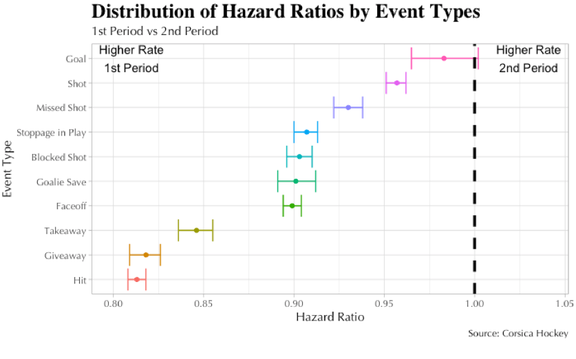
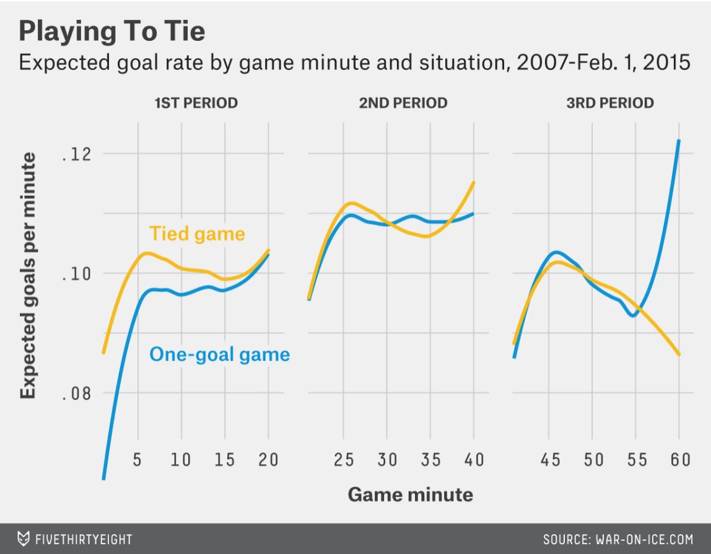
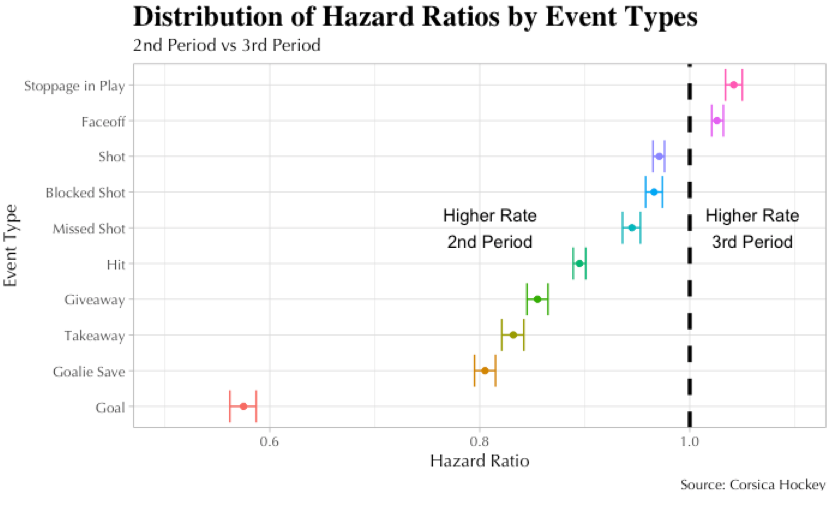
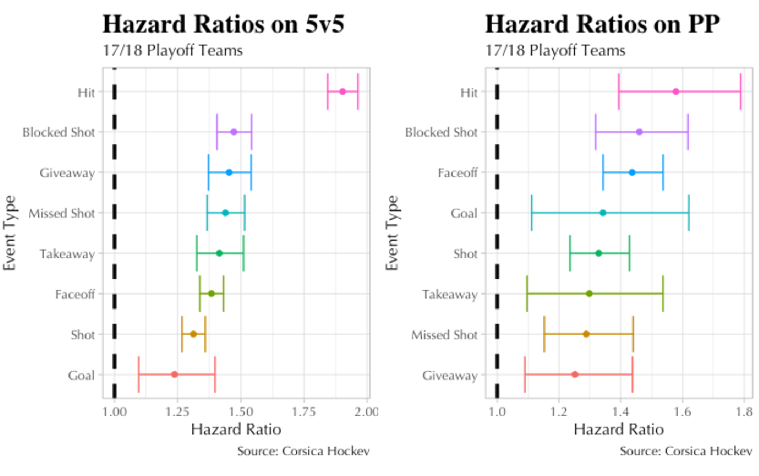

Introduction
After several months of learning the concept of survival analysis and applying it to hockey, I published my article, Quantifying Differences between the Regular Season and Playoffs using Survival Analysis. This post is a brief analysis to answer the question: “Can I repeat my previous analysis for regular season by period?”. First, I only look at regular season data and change the treatment variable from whether the game is played during the regular season or playoffs to whether it was played in Period X vs Period Y. Then, I approach the question in a different way by keeping the treatment variable as regular season vs playoffs, but filter for the 1st, 2nd, and 3rd periods. This further shows the discrepancy in change in rates of events by period.
Finally, I respond to some additional feedback from Ron Schultz: “Have you looked at the same comparisons, but with just the regular season games between the teams who ended up in the playoffs?”. I checked the differences between the regular season and playoffs by running my survival analysis on just the playoff teams in the 2017-2018 season. I discovered that this type of analysis yields a statistically significant difference in all event types.
Hazard Ratios: Period 1 vs Period 2

First, let’s compare event rates in the first period to the second. There are big differences in many of them: every event is statistically significant except for goals. Furthermore, they all move in the same direction: they decrease from first period to second period. The rate of hits decrease the most by almost 20%, leading me to believe that fatigue plays a factor as players slow down after 20 minutes. Long changes in the second period may contribute to fatigue as teams must skate farther to make changes.
Interestingly, this FiveThirtyEight article, To Make The Playoffs, Hockey Teams Play Not To Win by Noah Davis and Michael Lopez, makes a different observation with this plot:

This graph illustrates the expected goal rate by minute from 2007 to 2015 in tied games and one-goal games. According to Sam Ventura’s presentation slides at Ottawa Hockey Analytics conference, “a teams’ or players’ expected goals for is equal to the sum of the goal-probabilities of all their on-ice shot-attempts”. These goal-probabilities are explained using location, distance from goal, shot type, shot feature, and transformations / interactions of these variables.
The Expected Goal rate shows an increasing trend from the first period to the second period in both tied games and one-goal games. On the other hand, the hazard ratio for goals indicates a decrease in the rate of goals in the second period. This means that we “expect” more goals in the second period based on Ventura’s model, but survival analysis tells us that the rate of goals decreases.
Hazard Ratio: Period 2 vs Period 3

Now let’s compare the second period to the third. Again we see meaningful changes across the board. Notably, the rate of hits decrease by more than 10% and the rates of goals and shots all show a statistically significant decrease. One explanation is the change of motivation in the latter part of the game. Realistically, teams consider the longevity of the regular season. It is 82 games of grueling hockey from October to April, and then possibly another two more months of playoff hockey. As a result, teams may change the intensity of play in the third period to preserve their energy level for the next game, week, month, and hopefully, the playoffs.
This view is supported in the FiveThirtyEight article. Francois Beauchemin reveals that his team, the Ducks, won’t take as many risks late in the third period in order to go to overtime and earn at least one point. Todd Reirden, then an assistant coach with the Capitals, agreed: “Sit back, play defense, make sure we get a point…” His late in-game tactics are to shorten the bench and play guys “he knows will stay home and limit the opposition’s attacking chances, even if that means sacrificing a shot at getting a goal”. This stay-at-home mentality in both players and coaches contribute to such statistical results.
Hazard Ratio by Period
My original piece found differences between play in the regular season and the playoffs. Do these results change if we split them up by period?
In the first period, the hazard ratio for goals is 1.007, meaning as we move from regular season to the playoffs, goals increase by approximately 0.7%. In the second period, the rate of goals decreases by 2.4%, and in the third period, decreases by 2%. These results are not statistically significant. Significantly, the rate of goals increases in the first period from the regular season to the playoffs, but decreases by roughly the same amount in the rest of the game.
The rate of hits increase in the playoffs independent of period: approximately 45% in the first period, 30% in the second period, and 25% in the third period. Notably, hits swing the most from the regular season to the playoffs as its corresponding point is farthest from the vertical line representing a hazard ratio of 1.0.
With hazard ratios of 1.087 (first period), 1.062 (second period), and 1.081 (third period), the rate of stoppages in play increase in the playoffs in all three periods. I suspect these rates help explain the consistent increase in the rate of faceoffs throughout the game; once the play is blown down, the referee needs to resume play with a faceoff. More faceoffs mean more opportunities for faceoffs set plays in the playoffs.
Hazard Ratio: 17/18 Playoff Teams
In my previous piece, I looked at data for all teams, regardless of whether they made the playoffs or not. As a result, non-playoff teams were not accounted for in my analysis looking at the difference between the regular season and playoffs. One astute reader pointed that out and suggested I run the analysis on the teams who ended up in the playoffs. This ensures that I have evenly distributed data from the regular season and the playoffs.

The average percentage of change (hazard ratio - 1.00) on 5-on-5 situations for all events is 45% while on the power play is 37%, revealing bigger discrepancy in 5-on-5 situations from the regular season to the playoffs.
The reason, I’d argue, is that the power play is a more structured game within the game where teams typically play in one end of the rink. Attacking teams have a set formation once they gain control of the puck, and the penalized teams have their own style. This rigidity lends itself to less change from the regular season to the playoffs since a power play situation in the playoffs can be similar to that in the regular season. On the other hand, 5-on-5 play changes more dramatically from the regular season to the playoffs as the play is more fluid, with teams exchanging chances at both ends of the rink.
Key Takeaways
- From Period 1 to Period 2, the rate of all events go down: Long changes in Period 2 may contribute to fatigue as teams have to skate farther to their benches for changes
- We “expect” more goals in Period 2, according to Ventura’s model with location, distance from goal, shot type, and shot feature, but our survival analysis indicates this rate decreases.
- Taking into account the longevity of the regular season, teams dial down their intensity of play in the third period to preserve their energy level.
- Rate of hits differ the most from regular season to playoffs.
- On average, there is a larger discrepancy from regular season to playoffs in 5-on-5 situations since 5-on-5 play is more fluid.
Code is available here
The author would like to thank Sam Ventura for his contribution to this article.